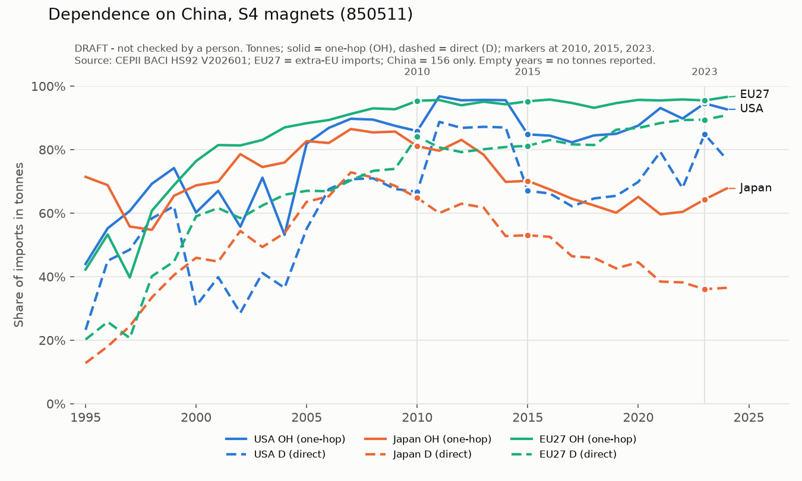
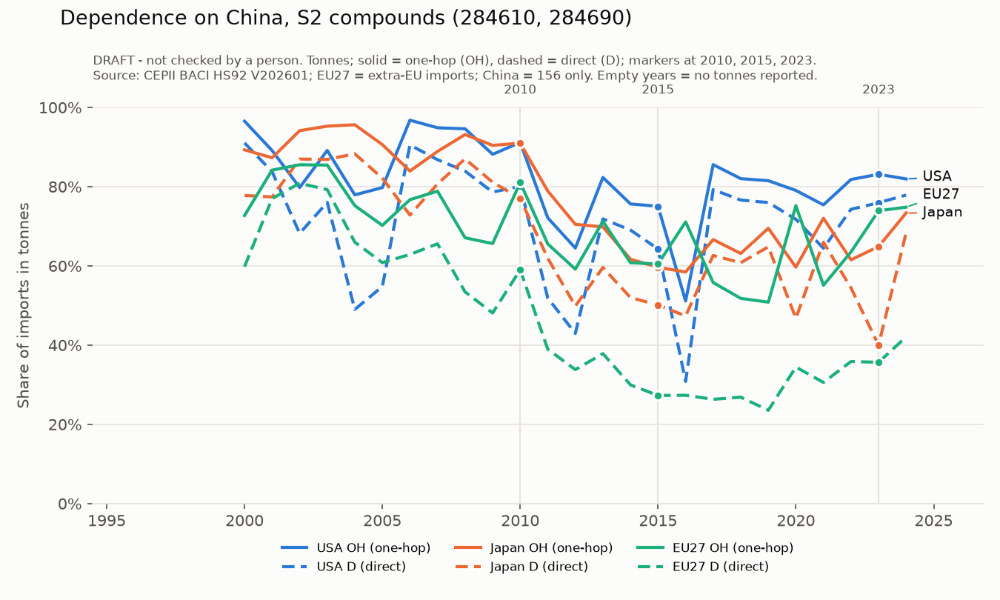
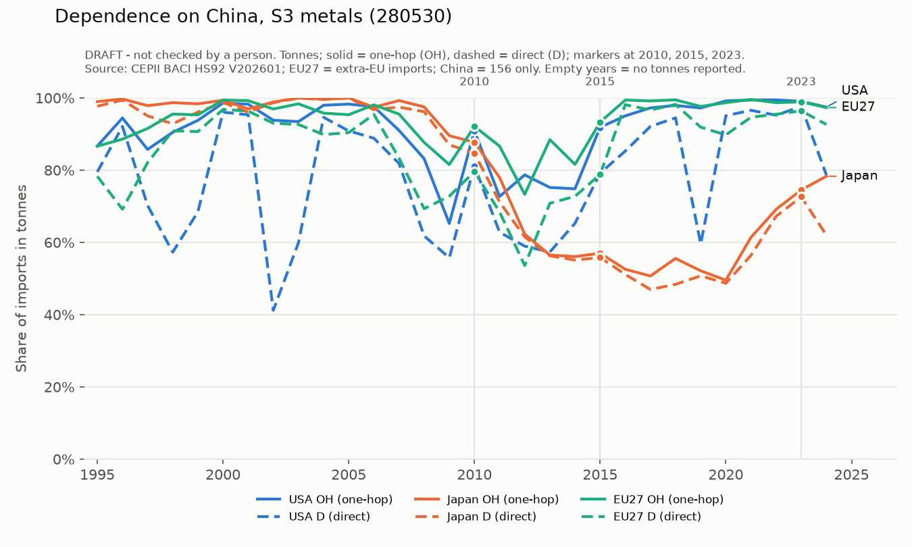
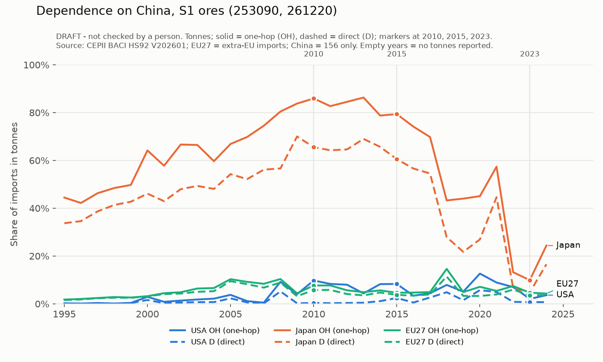
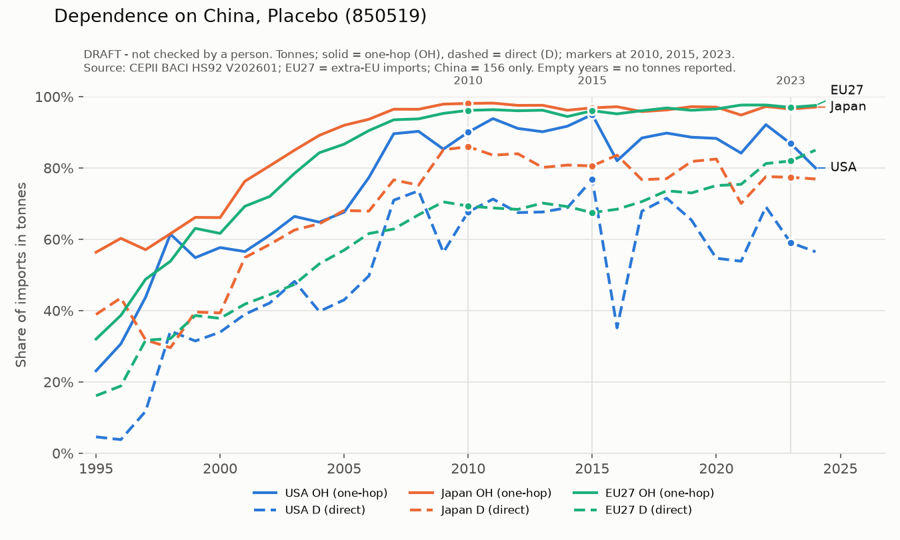

Page 6 of 10
One hop away
A magnet bought from Vietnam or South Korea is not a Chinese import in the statistics. But if Vietnam's own imports come largely from China, the dependence is only one step removed. We measure both: direct dependence (the share bought from China) and one-hop dependence (adding China's share inside each supplier's own imports). For US magnets in 2024, direct dependence is 77% and one-hop dependence 93%. Japan, China's target in 2010, buys only about 36% of its magnets directly from China, but about 68% once one hop is counted: almost three quarters of the difference comes through Vietnam, which itself buys 87% of its magnets from China. And the gap has grown. After 2010, Japan cut its direct dependence from about 65% to 36%, but its one-hop dependence fell much less and has been rising again since 2021. Japan diversified on paper; in practice, much of its dependence simply moved through Vietnam.
Dependence on China Data
Direct and one-hop dependence, 1995–2024

Other stages




Rerouting Illustrative · not data
Buying from Vietnam can still mean buying from China
When a Western importer cuts its direct purchases from China, the material may come back through a third country that itself buys from China. We call the difference the rerouting gap. Move the sliders to see how it opens.
direct = imports from China ÷ all imports
one-hop = direct + Σ (share from hub × hub's China share)
We use the proportional rule throughout the site; a threshold rule is a possible alternative. No real values are shown here.